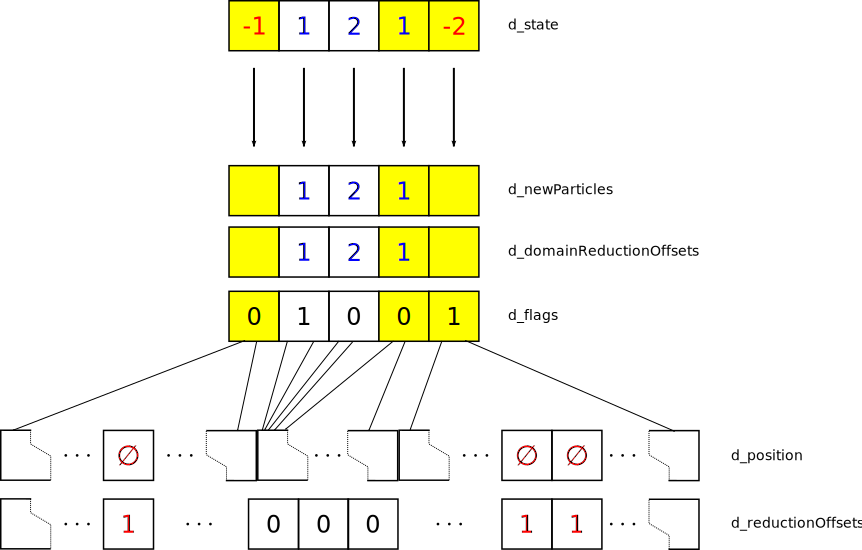
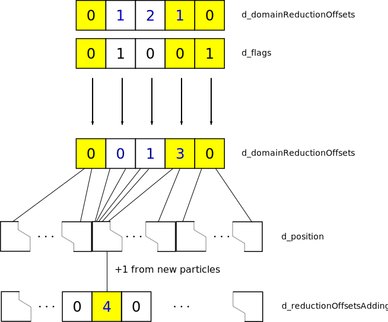
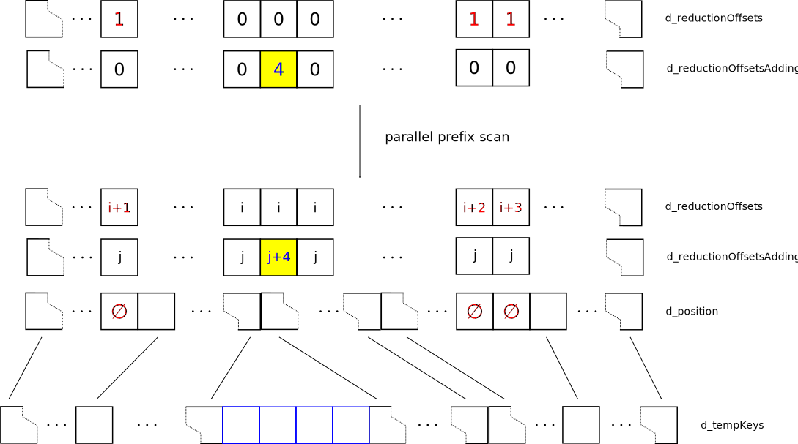
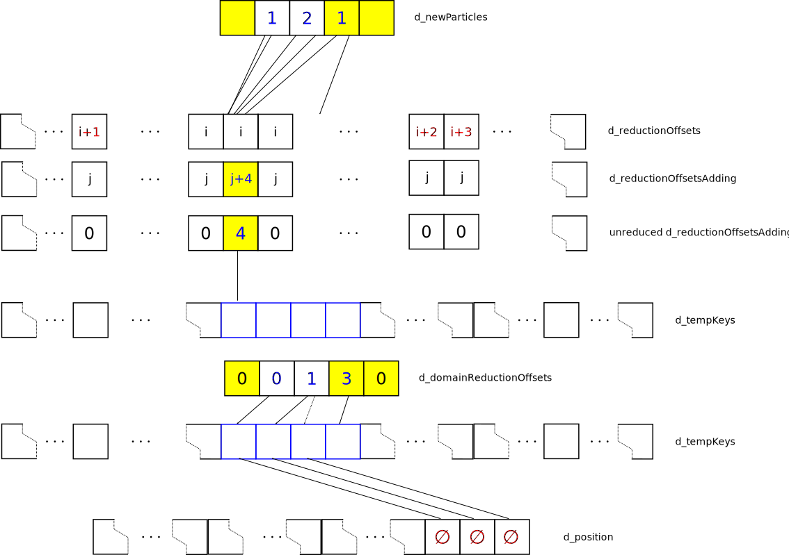

Particle creation and annihilation
Reactions among individuals or between individuals and standard particles are, as usual, handled in the Gillespie kernel. The reaction module is only concerned with the total number of particles in each cell and does not (yet) take into account individual particles. Instead, the reaction kernel just changes the number of particles according to the reactions. Some reactions might destroy or create individual particles and, in this case, the particle list, which associates the individual particles with their cells, needs to be updated.
The total number of individuals remains constant during the simulation and is set by the parameter maxNumIndividuals. If individuals are destroyed, they will be marked as inactive, which corresponds to a bit pattern of 0xffffffff in the key value of the position list. Inactive particles are located behind the active particles, i.e. the individuals which are have a position in the computational domain, and thus provide a pool of available particles. If a particle is created, it is take from the pool, its key value is set to the value of the cell it is created in, and is finally sorted onto the correct position in the list in order to uphold the integrity of the position list (remember that all individuals in a particular cell need to be at consecutive positions in the individual list). As such, the process of creation and annhiliation of individuals does not change the length of the individual list (or their personal id) but merely changes their position within the list and the associated cell (in the key value).
While destroying particles is relatively straight-forward to implement, insertion of new particles requires some care. In particular, we aim to avoid having to re-sort the particle list after each reaction step and we hence opt for an implementation through stream reduction and extension which can be cheaply implemented using standard parallel primitives such as scan and segmented scan. The basic steps to maintain the individual population list are as follows.
- Each cell goes through their list of individuals and determines if the total count agrees with the target count in the state array. If the target count is lower than the ``is’’ count, particles are picked randomly and set as inactive. If the target count is higher, the cell stores the number of particles that need to be created.
- In order to make sufficient space for the newly created particles, we need to know how many new particles are created between occupied cells. This will be achieved using a segmented scan primitive.
- We then use standard stream reduction to write a new list of particles where inactive indidividuals have been removed and space was made for the new particles.
- In a subsequent step, the annihilated particles are written to the end of the list while the new particles are filled in from the pool (see above).
- We finally update the cell indices for each cell.
We now explain the individual steps in some detail.
Maintain Population

The maintainPopulation kernel is called by each cell and first goes through its particle list counting the number of individuals. This count is then compared with the target value in the state array. If particles need to be created, we store the number of the new particles in an associated array. If particles need to be destroyed, the kernel randomly picks individuals from the list and marks them as inactive. We also build a reduction offset list (which will be needed later for the stream compaction). This reduction offset list has a value of 0 for particles which are still alive and 1 for dead particles. Finally, if our cell already has particles in it (marked yellow in the figure), it sets a flag in the next cell. This flag will tell the segmented scan to reset the scan value.
Expansion offsets

The next step is to create the offset list for the stream expansion, which will for each particle contain the number of new particles inserted before its position. Since particles might be created in empty cells as well, we first need to find the number of new particles in between occupied cells. We use a standard segmented scan algorithm for this [Sengupta2007]. As illustrated in the figure, the segmented scan computes the partial sum of the domain expansion offsets. The sum restarts at zero each time the flag is encountered. After completion of the scan, each occupied cell (yellow) knows the number of new particles it has to insert at the beginning of its particle list. Similar to the reduction list, each occupied cell now writes the number of particles to be inserted (including the ones created in this cell) in the expansion offset list at the position of its first particle.
Stream reduction/expansion

After completion of the previous step, each particle has now the information, how many particles need to be inserted before its own position (d_reductionOffsetsAdding) and if it needs to be removed (d_reductionOffsets). We can now use this information to write a new particle list where all flagged particles are removed and sufficient space is left for new particles to be inserted. This operation, illustrated in the figure is termed stream reduction/expansion and is a standard parallel primitive [Nguyen2007]. We implement it in two steps. First, we perform a parallel prefix scan on the reduction and expansion offsets separately. As a result, each particle has an associated index describing how many positions its end location is shifted towards the beginning (dreductionOffsets) or the end (d_reductionOffsetsAdding) of the list. The second step consists of copying the list of individuals while respecting the shift index for each particle. Only active particles are written. Inactive particles are copied in a temporary list where the current writing position is the reduction offset.
Re-ordering bulk particles
In the last step we need to (i) fill in the positions of the newly created particles with individuals from the particle pool at the end of the active particle list and (ii) move all inactive particles to the pool. We implement a kernel for each sub-step.
Fill in new particles

This kernel is parallelized over grid cells. Each cell will copy the number of individuals, which were newly created here, from the particle pool into its particle list. The main difficulty here is to find the correct indices for (i) the position in the new particle list (remember that the cell indices are invalid at this stage) and (ii) the position of the corresponding pool particle in the old list.
We find the position of the newly created particle starting from the cell index pointer. Depending on whether there originally were any particles in this cell, the pointer will either indicate the position of the first particle in the cell or the first particle in the next occupied cell. This position, however, refers to the particle list before any particles were added or removed. To get the corresponding position in the new list, we have to substract(add) the reduction(expansion) index for this particle. As a further sublety, if the current particle is invalid (since it was destroyed in the previous recation) we have to skip it by advancing the position by one. We have now a pointer to the first particle of the next occupied cell in the new list. All particles were added before this particle and we have to get a pointer to the beginning of this list. This is achieved by substracting the unreduced reduction offset (remember that this indicates the number of new particles to be added before this cell). We then have to add the domain reduction index corresponding to the current cell and can finally loop over all new particles. Obtaining the index for the pool particles is comparatively easy. Starting from the end of the old list, we have to add the total number of particles added before this cell and add the running index. The particle is then copied over. For most applications, the attributes would also need to be changed for the individuals. This can be done here.
Move inactive particles to pool
We can easily accomplish this task by parallelizing over all inactive particles. Each thread writes its particle from the temporary list to the end of the new particle list. The offset to determine the position in both lists is simply the thread id.
Cleaning up
We finally need to copy the temporary list into the old list and write the new number of particles. We also have to re-compute the cell indicies for each cell.